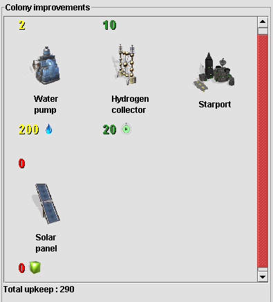
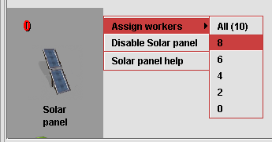
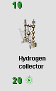
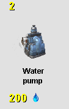
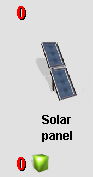

Colony improvements
Improvements that are built in the colony are displayed in this panel,
with total upkeep cost displayed in the footer. If an improvement
produces a resource and colonists must be assigned to it, the quantity
and number of colonists is displayed near the improvement image.

Colonists can be assigned to or removed from such an improvement by
clicking on the improvement image and selecting the desired number of
colonists from the displayed popup.

If a colony improvement is assigned its maximum number of colonists then
the information is displayed in green. The improvement will produce its
maximum output if it needs and has enough input resources.

If a colony improvement is assigned some colonists but not its maximum
then the information is displayed in yellow. In this case the
improvement will produce some output but not its maximum.

If a colony improvement is not assigned any colonists, the information
is displayed in red. The improvement will not produce any output.
